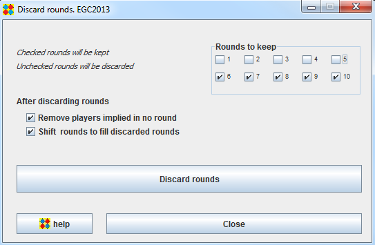

Discard rounds frame
Useful to keep certain rounds in a tournament and discard others.
May be used before exporting part of a tournament. Typically, if you run a main tournament in an european congress, you will have to split your rounds, round 1-5 for 1st week, round 6-10 for 2nd week (as in example below)

The "Discard rounds" button will :
- Discard unchecked rounds
- (if checkbox selected) Remove players implied in no round
- (if checkbox selected) Shift rounds to fill discarded rounds
In the example above, results of 2nd week (rounds 6-10) will be shifted to rounds 1-5